La anorexia y la bulimia se han convertido en una doble epidemia silenciosa que se ceba especialmente en jóvenes prisioneras del modelo social que prima la delgadez del cuerpo.
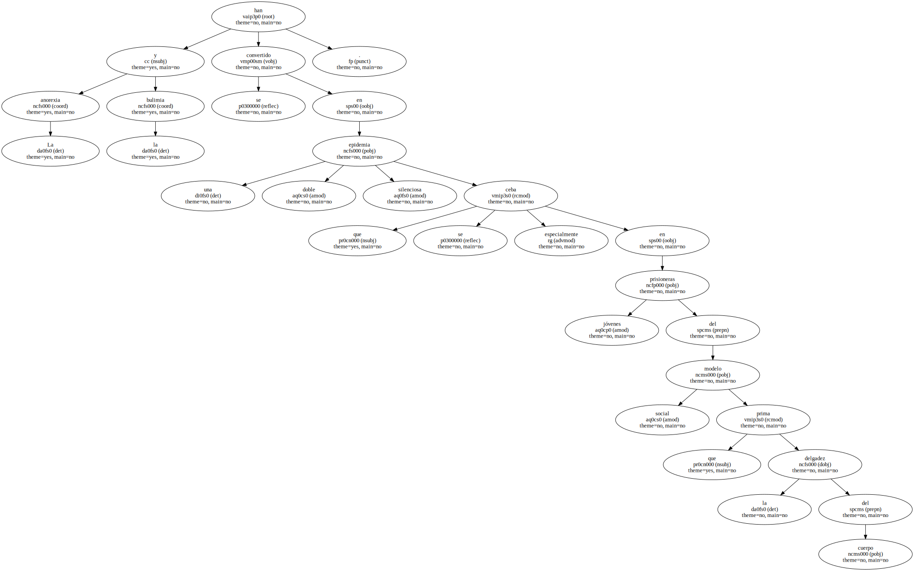Las estadísticas reflejan un incremento constante del número de muchachas que apenas ingieren alimentos o que se fuerzan vómitos para mantener la línea.
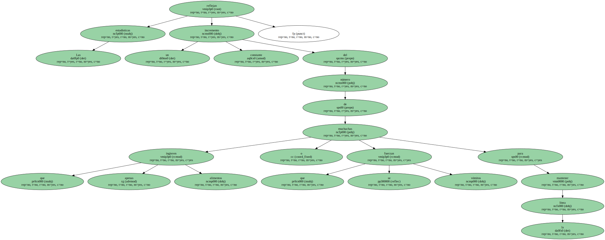Entran así en un camino de autodestrucción del cual luego es muy difícil salir.
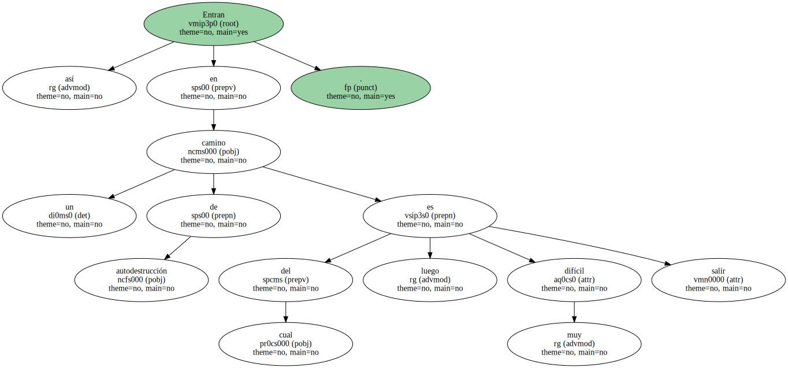La magnitud del problema ha movilizado al juez que se encarga en Barcelona de los internamientos psiquiátricos.
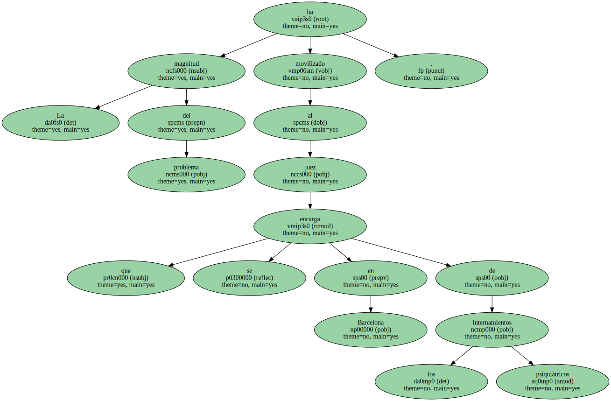Este , a instancias de algunos médicos , empieza a dictar la incapacidad jurídica de algunas de las afectadas o a ordenar directamente su ingreso en centros sanitarios que puedan controlar su alimentación.
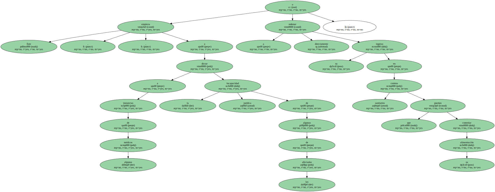Está bien empezar a tomarse en serio esta dolencia que hasta hace poco se sufría de forma íntima y sin esperanzas de superación.

Sin embargo , puede ser precipitada esta radical intervención judicial suspendiendo derechos de las personas afectadas , ya que en ningún caso constituyen un peligro social.
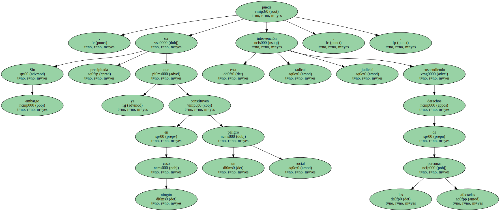Nos encontramos ante una enfermedad moderna de la que se desconocen muchos de los mecanismos de desarrollo , tratamiento y curación.

Y es por ahí por donde debemos avanzar : más medios para investigarla y , sobre todo , más servicios para atender a este tipo de enfermos y sus familias.
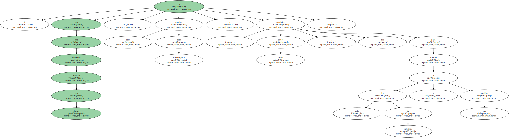Por ejemplo , es intolerable que haya un número mínimo de camas públicas para anoréxicas y bulímicas.
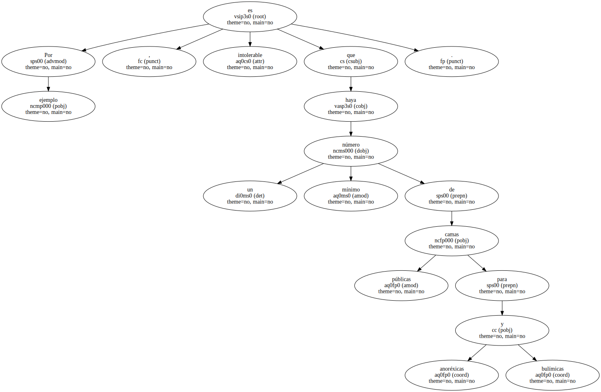Favorece la aparición legítima de centros privados que intentan curar a precios elevadísimos , pero discrimina a las pacientes con menos medios , cuando se trata de una enfermedad completamente interclasista.
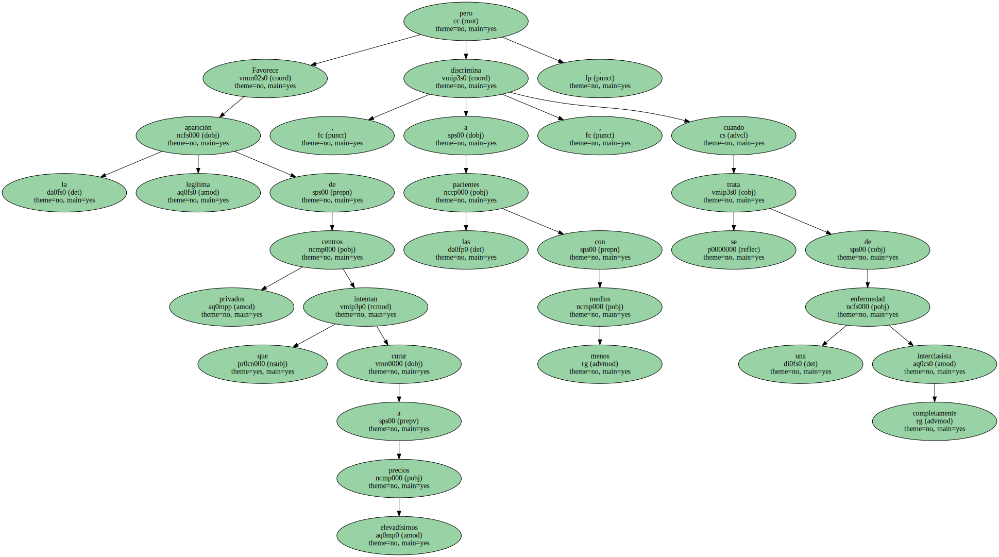Bienvenida sea la intervención de la justicia.
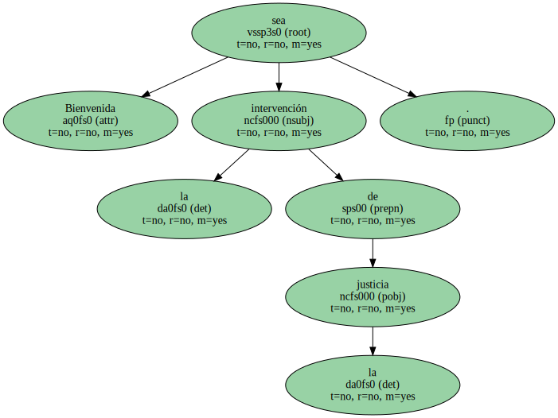Pero que lo haga con suma prudencia y en casos en los que se diriman derechos en conflicto , y nunca para criminalizar a quienes son las simples víctimas de la enfermedad.
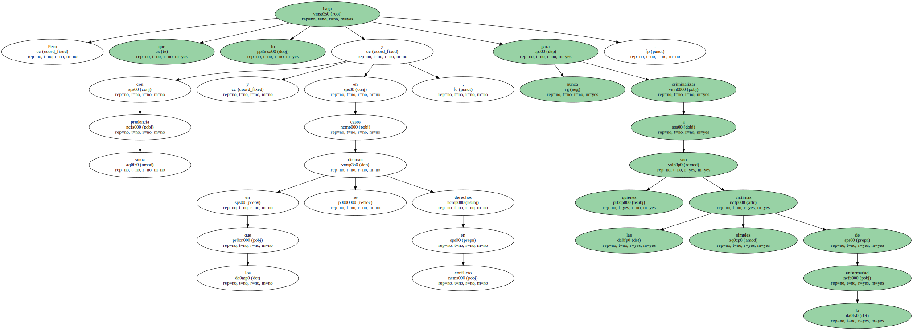